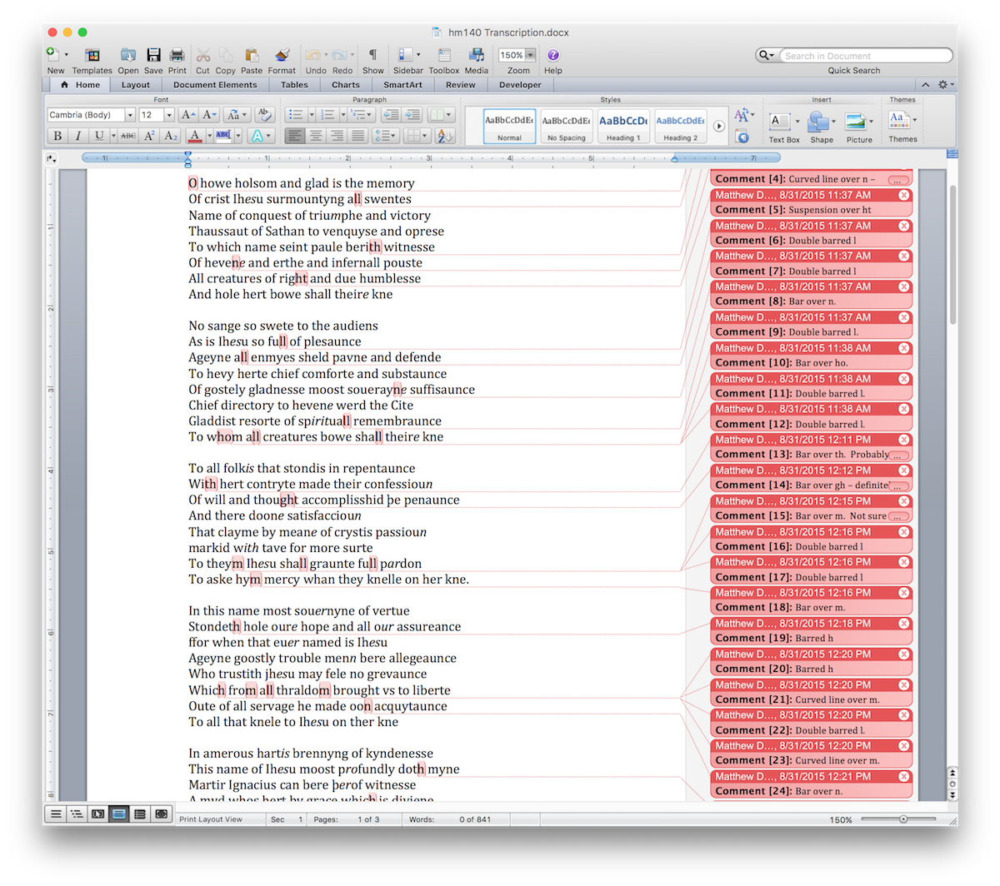

How do you transcribe an item?
How do you transcribe an item?
HomeAbout the ArchiveAbout John LydgateWorksManuscriptsContactVisualization
This is actually a more complex question than it may initially seem, and is composed of two parts. The first part, the transcription of a witness and production of the resulting XML file, is more practical while the second, preparation of that transcription for ultimate display on the web, is far more philosophical. In either case, the actual work of preparing an archive of digital facsimiles such as this site is something akin to viewing an iceberg: the actual information you can see is the result of hundreds of hours of invisible labor that often goes unnoticed and thus is unvalued. As part of a general desire to eliminate black boxes in the development of scholarly work and increase transparency, I will explain the process as I undergo it (and with the understanding that even that invisible work relies on the equally invisible labor of digitizers, coders, and metadata specialists that often go unsung, to say nothing about the people who produced the original material object), but there are multiple possible ways that the same result might be achieved.
Practical
I work primarily from two sources. Ideally, I transcribe from the actual physical object itself, but as most of the items in the archive are held by institutions in the United Kingdom this is often impractical. In those cases I will work from images purchased from or donated by the holding archive or taken with permission during archival research, and use my research time in the UK to examine the physical object and make notes on its composition, structure, media used, and the integrity of the items it contains as a physical collection of texts. The actual process of transcription itself occurs via entering the glyphs, as I see them, into a word processing document:

This differs from the method generally taught, which involves writing down the transcription into a notebook so as to be able to capture the nuances of scribal hand via replication. As more and more archives are allowing researchers to take digital photographs of their texts for personal use, I find it easier to type out what I see and take reference photographs to catch oddities I might want to make reference to. Not to mention that this alleviates issues with misreading my own handwriting!
Another benefit from transcribing my documents into a word processing program is that the two most commonly used—Microsoft Word and Libre/OpenOffice—utilize (unfortunately differing) document standards based on wrapped XML files1. What this means practically is that a Word .docx file or an OpenOffice .odt file is in fact a zipped up directory of multiple related files that the program parses to create the document on your screen. These files can be unzipped, and the underlying Extensible Markup Language (XML) files accessed.
XML is a highly flexible and adaptable language that can be used for multiple purposes. What limits XML to a particular purpose is a set of metadata standards known as a namespace. The namespace for a Microsoft Word document is called WordprocessingML (abbreviated to w) and the namespace for the XML standard used in book and manuscript studies as well as literature is that of the Text Encoding Initiative, or TEI (abbreviated to tei). WordprocessingML's version of XML looks like this:
<w:p w14:paraId="75FED61C" w14:textId="77777777" w:rsidR="00F43E0B" w:rsidRDefault="00F43E0B" w:rsidP="00F43E0B">
<w:commentRangeStart w:id="0"/>
<w:r>
<w:t>O</w:t>
</w:r>
<w:commentRangeEnd w:id="0"/>
<w:r>
<w:rPr>
<w:rStyle w:val="CommentReference"/>
</w:rPr>
<w:commentReference w:id="0"/>
</w:r>
<w:r>
<w:t xml:space="preserve">
howe holsom and glad is the memory
</w:t>
</w:r>
</w:p>
<w:p w14:paraId="4C68DFE4" w14:textId="21CDBFDC" w:rsidR="00F43E0B" w:rsidRDefault="00C00A8D" w:rsidP="00F43E0B">
<w:r>
<w:t>
Of crist I
</w:t>
</w:r>
<w:r w:rsidR="00F43E0B">
<w:t>
h
</w:t>
</w:r>
<w:r w:rsidR="00F43E0B">
<w:rPr>
<w:i/>
</w:rPr>
<w:t>
es
</w:t>
</w:r>
<w:r w:rsidR="00F43E0B">
<w:t>
u surmountyng a
</w:t>
</w:r>
<w:commentRangeStart w:id="1"/>
<w:r w:rsidR="00F43E0B">
<w:t>ll</w:t>
</w:r>
<w:commentRangeEnd w:id="1"/>
<w:r w:rsidR="00F43E0B">
<w:rPr>
<w:rStyle w:val="CommentReference"/>
</w:rPr>
<w:commentReference w:id="1"/>
</w:r>
<w:r w:rsidR="00F43E0B">
<w:t xml:space="preserve">
swentes
</w:t>
</w:r>
</w:p> Which if you've looked at any of the XML downloaded from this site or on the TEI Consortium's homepage you'll note is markedly different.
Obviously, then, much of the markup above as well as the markup in a Word file
applies only to the internal processes of WordprocessingML's particular version of
XML. However, it is a fairly simple matter to transform WordprocessingML to TEI XML
via an xslt transformation. I should note here,
however, that the transformation at that link is somewhat incomplete, as it still
requires a manual step to paste the transformed transcription code into a prepared
TEI document that has the necessary header information. Eventually this may be
automated using the "<xi:include> function in an xml wrapper, by
modifying the xslt to include the header information, or programmatically by
including XQuery in a PHP script or Java program, but I find the manual nature of
cutting and pasting actually adds an element of quality control that might be absent
otherwise.
Once the TEI-encoded XML (hereafter referred to as TEI) is generated from the WordprocessingML, I then go through the code with my original transcription and notes and add anything—deletions, additions, notes regarding shifts in script or scribe, general notes regarding oddities in the text, and other oddities I noted in my initial examination. Again, this portion could be done programatically by accessing the particular WordprocessingML file that contains the notes and referring back to the original document, but I use this manual step to provide a level of quality control, checking my transcription against the images again to ensure that I've been accurate and consistent in transcribing. After that is completed, the modified and corrected TEI is processed again to produce static HTML documents, which is what a viewer sees when they come to the site.
Philosophical
The archive is encoded in TEI, but TEI is really just a set of agreed-upon XML metadata standards, enforced via a consortium, in a similar manner to the way that there’s a set of agreed-upon standards for the HTML markup language that is the underlying building blocks of the web. The setting of standards enforces a certain degree of interoperability that would not be possible otherwise.
However, like with anything where there’s a standard, the question becomes how rigidly the standard should be applied and how the decisions about the standard are made. The about page for the TEI Consortium states that “materials encoded with the TEI Guidelines are as various as its practitioners,” but at its heart, TEI is really designed around the encoding of content for the development of transcriptions of printed materials, quite often in the form of online editions.
If you look at the standard structure of a TEI document, it looks something like this:
<TEI version="5.0" xmlns="http://www.tei-c.org/ns/1.0">
<teiHeader>
<fileDesc>
<titleStmt>
<title>
The shortest TEI Document Imaginable
</title>
</titleStmt>
<publicationStmt>
<p>
First published as part of TEI P2, this is the P5 version using a name space.
</p>
</publicationStmt>
<sourceDesc>
<p>
No source: this is an original work.
</p>
</sourceDesc>
</fileDesc>
</teiHeader>
<text>
<body>
<p>
This is about the shortest TEI document imaginable.
</p>
</body>
</text>
</TEI>
In that document, there are two parts: the <teiHeader>, which is
the information about the document as a digital file (with information on the actual
source document as a subsection)—and the <text> itself. So what
we’re seeing here is a single level of abstraction. That level of abstraction can
be
taken still further, to the point where the actual content of the item is actually
obscured by information about that content.
This descriptivist impulse is partially due to the fact that any digital item—whether “born digital” or transcribed—is composed of discrete pieces ultimately reduced to 0’s and 1’s. The real, material world does not function in this way. There is a messiness to things that denies neat categorization. So, much as in the real world and with traditional editing, choices are made as to what should be foregrounded and what should be ignored. Buried in the TEI acronym is just one such conscious choice regarding what is important: the text, which is to say the written content of a material item or born digital artifact. The material aspects of the text-what we might traditionally all its paratext-are important, but are often reduced to descriptive material to be set aside in the header or divided off from the text rather than integrated alongside it. This is a function both of TEI's design and of the underlying abstraction-through-description XML encourages. Implicitly built into the name, and much of the thinking around, TEI is the attempt to delineate and describe what cannot really be delineated.
The facts of digitization and expression of material objects as an abstraction presents me with a philosophical quandry. Ideas, to me, are created, transformed, and received not as discrete, platonic items but filtered through the tools and methods used both to inscribe and to interpret them. So presenting any material object online fully and completely as it is is an inherent impossibility. At the same time, however, the uniqueness of these manuscript witnesses means that they need to be made available much more widely than they might be otherwise.
My solution to this is admittedly imperfect, and is twofold: first, I attempt
whenever possible to remind the person viewing this site of the material existence
of these objects. They have heft, and often are not just composed of the Lydgate
material. A viewer in the upper left corner, giving where the particular page is
both in the gathering and in the text as a whole, is intended to serve as a constant
reminder of the page’s existence as part of a whole. In the case of non-codex items
such as the Clopton Chapel, I have looked for the best method possible to provide
the viewer with a sense of that whole, often through visualizations. Second, instead
of the TEI encoding utilized above I use a method centered on the
<sourceDoc>, rather than <body>,
element:
<sourceDoc>
<surfaceGrp n="leaf1">
<surface facs="page1.png">
<zone>
All the writing on page 1
</zone>
</surface>
<surface>
<graphic url="page2-highRes.png"/>
<graphic url="page2-lowRes.png"/>
<zone>
<line>
A line of writing on page 2
</line>
<line>
Another line of writing on page 2
</line>
</zone>
</surface>
</surfaceGrp>
</sourceDoc>
This is a new method, included in the latest revision of the TEI standard, for
transcriptions that are concerned with following the material object as closely as
possible. I go a step further by placing another <surfaceGrp>
element around each gathering. In this way, the material composition of the text is
reflected in the transcription, and the structure of the physical object can be
inferred by just looking at the code without any specialist codicological
training.
I have failed, however, in removing abstraction and descriptivism entirely. This is an example from my transcription of British Library Harley 2255:
<surfaceGrp xml:id="g.8" n="gathering">
<surfaceGrp xml:id="f.66" n="folio">
<surface n="verso">
<label>
Folio 66 Verso
</label>
<graphic url="British_Library_Harley_2255_f66v.jpg"/>
<zone n="EETS.QD.I">
<line n="l.1">
Quis dab
<ex>
it
</ex>
capiti
</line>
<line n="l.2">
Meo fonte
<ex>
m
</ex>
lac
<ex>
rimarium
</ex>
</line>
</zone>
</surface>
</surfaceGrp>
</surfaceGrp>
It should be noted, however, that the <surfaceGrp>-based transcription
methodology has one issue that tends to run at odds with my philosophy regarding transcription.
That is that it is designed primarily around the idea of a transcription,
or a rendering of what exactly is on the page. While admirable, the issue with this
in terms of
medieval manuscripts is that there are a number of marks on the page that are intended
to represent
abbreviations we have no modern glyphs to represent or to indicate text that can be
expanded, again with a mark indicating that the expansion exists. As Michelle Brown
notes, abbreviations be mentioned by use of the apostrophe, but there's
nothing really to indicate an expansion as a single character. The traditional way
of getting around this is to put the expansion in rounded brackets (so like the
parenthesis you see here), but to my mind it seems foolish to do so when there's a
perfectly useful group of elements under the TEI standard to handle this. So what
I
have done is included <ex> elements to expand any abbreviated text, with the
idea that if someone wants to use the TEI they can either adjust the element to the
rounded brackets or convert it to the <text>-based standard fairly easily.
Under the encoding I currently use, then, the structure of the codex is there and
the
majority of technical interventions, such as the <ex> tags
surrounding the expanded abbreviations, are understandable at first glance.
Necessities regarding display on the web, however, have caused the need for several
additional attributes—the @xml:id and @n in several
places—in order for machines to render what is readily intuited from the object by
a
human properly.
Note though that those interventions only exist when necessary, and that the lines are rendered as they appear on the page with the understanding that the reader would mentally expand any abbreviation, recognize gaps, and otherwise mentally do the work of decoding the scribe's intent that TEI tends to assume is the province of editors. This is an attempt to follow the second of my design principles—to defer to the physical object whenever possible and to avoid undue abstraction.
This decision means that the text requires additional processing to be rendered for more quantative approaches, since the individual lines would need to be reduced further into individual words or segments. I am not interested in doing such work on this site, and so philosophically the TEI has not been rendered in order to make that happen. It also would be made more difficult based on the fact that Middle English in the fifteenth century does not have a consistent system of spelling, and so I have elected not to do so unless there's a pressing need. That decision, however, does have implications for future work with my TEI-encoded texts that would need to be considered should one want to take my TEI and work with it quantatively.
-
I should mention here that there are specialty tools that attempt to bring word processing-like features to XML/TEI work (Juxta2, TypeWright, CWRC-Writer, and TAPAS are four that immediately come to mind), but in the case of all four you'll note they're either attached to existing projects (and thus created for that project primarily) or have what I consider a higher bar to entry than the simple Word documents that most of us have used for years in our professional and academic lives. Additionally, in some cases-although not in the case of the four I mention above-the tool is built primarily as a means to secure funding for centers as there's more money available for tool development than there is for working with the cultural heritage items those tools deal with. ↩
-
I should note that, as I've written about elsewhere, Juxta comes in two varieties-a rather good Java program and an online version with a reduced feature set. It appears that as of September 8th, 2020 the online version is being deprecated in favor of a new tool, and this speaks to another benefit of using a basic word processor like Word or OpenOffice: because they are part of standard office setups they tend to have much, much longer "shelf lives" than proprietary products. While it bothers me when scholars shoehorn their work into tools built for the sciences, in this case I feel the benefits outweight the possible detriments. ↩

Except where otherwise noted, this work is licensed under a Creative Commons Attribution-NonCommercial-ShareAlike 4.0 International
License.